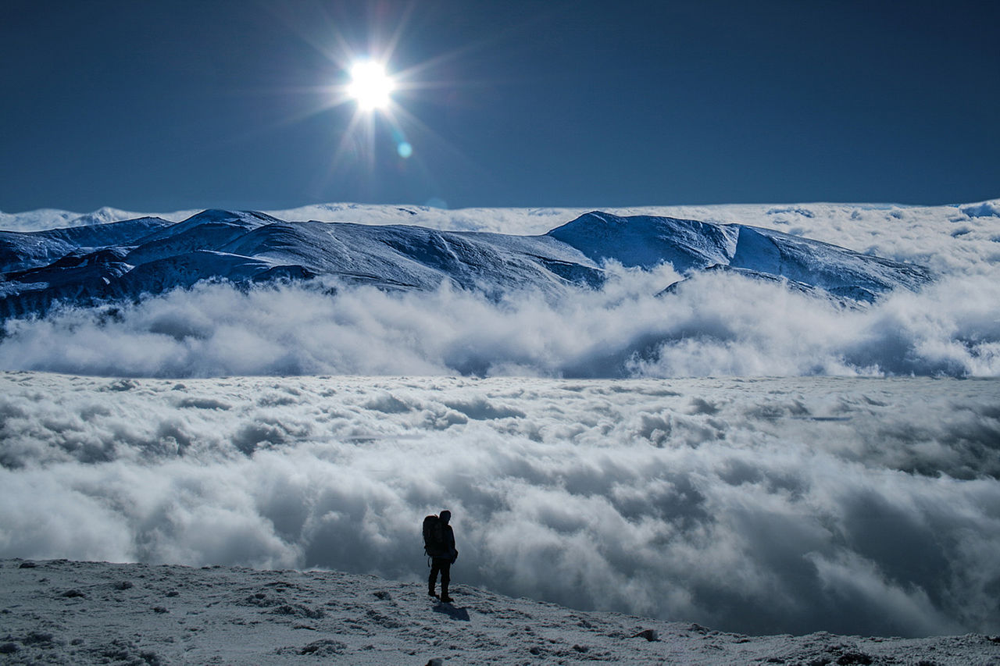
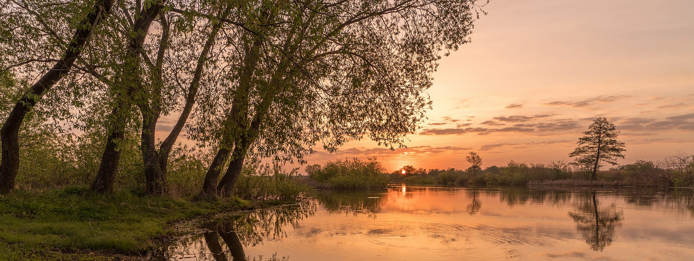
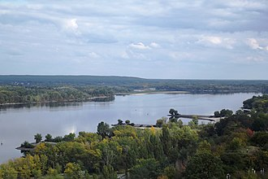

Розташування

Україна розташована в південно-східній частині Європи. Вона має спільні сухопутні державні
кордони з Білоруссю на півночі, з Польщею на заході, зі Словаччиною, Угорщиною, Румунією і
Молдовою на південному заході й із Росією на сході. Південь України омивається Чорним та
Азовським морями. Морські кордони вона має з Румунією і Росією.
Загальна площа України становить 603 700 км², вона становить 5,7 % території Європи й 0,44 %
території світу. За цим показником вона є другою за величиною серед країн Європи після Росії
(або найбільшою країною, яка повністю лежить у Європі). Площа виключної морської економічної
зони України становить 72 658 км². Код країни за системою ISO 3166-1-alpha-2 — UA. Територія
України витягнута із заходу на схід на 1316 км і з півночі на південь на 893 км, лежить
приблизно між 52° 20′ та 44° 23′ північної широти й 22° 5′ і 41° 15′ східної довготи.
- Крайній північний пункт — село Грем'яч (урочище Петрівське) Чернігівської області.
- Крайній південний пункт — смт Форос Автономної Республіки Крим.
- Крайній західний пункт — село Соломоново Закарпатської області.
- Крайній східний пункт — село Рання Зоря Луганської області.
- Географічний центр України розташований на північній околиці села Мар'янівка Звенигородського району Черкаської області.
- Згідно з однією з методик вимірювання, географічний центр Європи розташований на території України, неподалік міста Рахів Закарпатської області.
Найбільшими чорноморськими портами є Одеса, Чорноморськ, Херсон, Севастополь, азовськими —
Маріуполь, Бердянськ, Керч.
Загальна протяжність кордонів 6993 км, із них сухопутних 5638 км. Довжина морської ділянки
кордону: 1355 км (Чорним морем — 1056,5 км; Азовським морем — 249,5 км; Керченською протокою —
49 км).
Рельєф

У рельєфі України переважають рівнини (95 % усієї площі), що належать до південно-західної
окраїни Східноєвропейської рівнини. Вони поєднують Поліську, Придніпровську й Причорноморську
низовини, що займають 70 % поверхні України, а також Волинську, Подільську, Придніпровську,
Донецьку й інші височини. Пересічна абсолютна висота рівнин становить 175 м. В Україні
знаходиться найвища точка Східноєвропейської рівнини — гора Берда, висотою 515 м над рівнем
моря.
Гірські масиви в Україні представлені частиною Карпатських гір — Українськими Карпатами, де
розташована найвища вершина України — гора Говерла (2061 м над рівнем моря), й Кримськими
горами, найвищою вершиною яких є гора Роман-Кош (1545 м).
Сейсмічність України проявляється в західних, південно-західних і в південних районах, які
розташовані поблизу потужного Середземноморсько-Альпійсько-Трансазійського сейсмогенного поясу
планети, і де виділяються два основні сейсмічні регіони: Карпатський і Кримсько-Чорноморський.
Значна частина території піддається впливам власних (місцевих) землетрусів і сильних підкорових
землетрусів зони Вранча (Румунія).
Клімат

Територія України лежить переважно в помірно-континентальній області помірного кліматичного
поясу зі зростанням континентальности з північного заходу на південний схід. Південний берег
Криму виділяється в окремий регіон субтропічного середземноморського клімату. В Українських
Карпатах і Кримських горах висота місцевості й експозиція схилів зумовлюють вертикальну
зональність клімату.
Середньорічна температура повітря в Україні коливається від +11…+13 °C на півдні до +5…+7 °C на
півночі. Пересічна середня температура найхолоднішого місяця (січня) змінюється від −7…−8 °C на
північному сході до 0 °C у степовому Криму й +2…+4 °C на Південному узбережжі Криму. У
найтеплішому місяці (липні) середньомісячна температура змінюється від +17…+19 °C на півночі й
північному заході країни до +22…+23 °C у південних районах і +25 °C — на Південному узбережжі
Криму.
Найнижча температура повітря на території України зафіксована 8 січня 1935 р. у Луганську.
Унаслідок вторгнення повітряних течій з Арктики температура знизилася тут до −42 °C.
Основною закономірністю в розподілі опадів на території України є їхнє зменшення з півночі й
північного заходу в напрямку на південь і південний схід. Найбільші річні суми опадів помічено в
Українських Карпатах — 1500 мм (полонина Плай — 1663 мм) і Кримських горах (1000—1200 мм),
найменші — на причорноморському узбережжі й на Присивашші (від 450—400 до 300 мм). На переважній
частині території кількість опадів у середньому змінюється від 650—600 мм на заході до 450—400
мм на півдні й південному сході. Основна їхня маса припадає на теплий період року, за винятком
Південного берега Криму. Узимку опади бувають у вигляді снігу, майже на всій території країни;
висота снігового покриву — 10—30 см, а в горах досягає 40 см.
Передбачається, що за 50—100 років клімат України стане більш посушливим, схожим на
австралійський.
Водотоки та водойми

На території України протікає 63 119 річок і струмків загальною довжиною понад 206 тис. км, із
них довжиною 10 км і більше — 3302[52]. Більшість річок належить до басейну Чорного й Азовського
морів і лише з 2 % території води мають стік до Балтійського басейну (Сян і Західний Буг із
їхніми притоками). Головні річки — Дніпро, Сіверський Донець, Південний Буг, Дністер, Дунай.
Озер у країні близько 20 тис., з них лише 43 мають площу 10 км² і більше. Найбільше озеро
Українського Полісся — Світязь має площу 27,5 км². Більшу площу мають солонуваті озера лиманного
походження — придунайські (Ялпуг — 149 км²), причорноморські (штучно опріснений Кундук (Сасик) —
204,8 км²), кримські (солоне озеро Сасик-Сиваш — 71 км²). В Україні споруджено 1157 водосховищ і
28,8 тис. ставків. Найбільші водосховища — на Дніпрі (Кременчуцьке, Каховське, Київське,
Канівське). Найбільший лиман — Дністровський — 360 км². Найсолонішим є Куяльницький лиман —
157—227 ‰.